IDS 是 Ideographic Description Sequences（表意文字描述序列）的缩写，用于描述汉字的结构，如「
因此，字统网 (zi.tools)站长白易在 IDS的基础上延展了特殊语法形成了「白式 IDS」，以消除 IDS 的歧义。 使用该 IDS 语法表述的数据库在 https://github.com/yi-bai/ids 以 MIT 授权开源发布。本文尝试解说「白式 IDS」中的特殊语法。
截至 Unicode 16.0.0，共有17种 IDC（Ideographic Description Characters，即表意文字描述字符）。在。它们及其 Unicode 码点、含义和用例如下表所示：
| IDC | U 码 | 字统快捷键 | 含义 | 用例 |
|---|---|---|---|---|
| ⿰ | U+2FF0 | LR (left right) | 左右结构 | |
| ⿱ | U+2FF1 | UD (up down) | 上下结构 | |
| ⿲ | U+2FF2 | LL (left left) | 左中右结构 | |
| ⿳ | U+2FF3 | UU (up up) | 上中下结构 | |
| ⿴ | U+2FF4 | OC (over center) | 全包围结构 | |
| ⿵ | U+2FF5 | OD (over down) | 上包围结构 | |
| ⿶ | U+2FF6 | OU (over up) | 下包围结构 | |
| ⿷ | U+2FF7 | OR (over left) | 左包围结构 | |
| ⿸ | U+2FF8 | RD (right down) | 左上包围结构 | |
| ⿹ | U+2FF9 | LD (left down) | 右上包围结构 | |
| ⿺ | U+2FFA | RU (right up) | 左下包围结构 | |
| ⿻ | U+2FFB | XX (交叉) | 重叠 | |
| | U+2FFC | OL (over left) | 右包围结构 | |
| | U+2FFD | LU (left up) | 右下包围结构 | |
| | U+2FFE | MI (mirror) | 水平镜像 | |
| | U+2FFF | RO (rotate) | 旋转 | |
| | U+31EF | SU (subtract) | 删减 |
EBNF 语法定义：
IDS_Sequence ::= ...
| IDS_UnaryOperator IDS_Component
| IDS_BinaryOperator IDS_Component IDS_Component
| ...
| IDS_TrinaryOperator IDS_Component IDS_Component IDS_Component
IDS_UnaryOperator ::= []
IDS_BinaryOperator ::= IDS_BinaryUnique | IDS_BinaryOverlap | IDS_BinaryAmbiguousWrapping
IDS_BinaryUniqueOperator ::= [⿰⿱⿸⿹⿺]
IDS_BinaryOverlapOperator ::= "⿻"
IDS_BinaryAmbiguousOperator ::= [⿴⿵⿶⿷]
IDS_TrinaryOperator ::= [⿲⿳]
无嵌套的 IDS 语法十分简单，为：
IDS 允许无限嵌套，例：
其他嵌套结果例子：
以下章节将表述由字统网站长白易自定义的 IDS 语法，如：「
本文接下来于内文使用的定义语法为：<字> <TAB> <IDS 定义组>，中间 TAB 字符为 U+0009 字符，表示 <字> 的 IDS 定义为 <IDS 定义组>。如果一个字有多个 IDS 定义，则可以使用第二个 TAB 字符分隔开来，如：<字> <TAB> <IDS 定义组> <TAB> <IDS 另类定义组>，其中 <IDS 定义组> 是默认拆分的方式，<IDS 另类定义组> (alternative) 则是拆分成比较不合理、不常见的部件。例如「滟」的 IDS 条目：
滟 ⿰氵.艳. ⿰沣.色.一般应拆成「
EBNF 语法定义：
IDS_Definition_Row ::= Ideograph_Char TAB IDS_Locale_Definition (TAB IDS_Alternative_Definition)
IDS_Locale_Definition ::= IDS_Sequence | IDS_Locale_Sequence (";" IDS_Locale_Sequence)*
IDS_Alternative_Definition ::= (IDS_Sequence | IDS_Locale_Sequence) (";" (IDS_Sequence | IDS_Locale_Sequence))*
为方便在字统网上快速搜索汉字，字统网特别添加了一个特殊 IDS 符号「🔄︎」（emoji: 🔄️，U+1F504）来表示「替换」。其用法为「
本文研究的数据来源是字统网站长白易在 GitHub 上开源的 IDS 数据库。以下所有延展语法的解说都是从该数据库的 IDS 定义提取出来。该数据库为每个汉字提供 IDS 定义，其中统一化的程度可区分为三级：
本文使用的UCV 表（Unifiable Component Variations, 可统一组件变体列表）是 IRG （Ideographic Research Group，即「表意文字研究小组」）下 IWDS 系列二文件（IRG Working Document Series 2）的最新文件。
以下内容皆以 lv0 IDS（即笔画级区分）为基础进行解说，提到的扩展语法都是 lv0 IDS 内已使用的语法。
为方便理解，以下拆分不同章节分别解说：
如果你细心观察 §2.3〈有嵌套的 IDS 语法〉 中「Variant_Identifier_Definition）。
EBNF 语法定义：
/* 定义 IDS 组合里面的「字形变体标识符」 */
IDS_Locale_Sequence ::= ... IDS_Sequence Variant_Identifier_Definition?
Variant_Identifier_Definition ::= "(" Variant_Identifier ("," Variant_Identifier)* ")"
/* 在 IDS 里使用「字形变体标识符」 */
Ideo_with_Variant_ID ::= Ideograph_Char_with_Variant Variant_Identifier?
从 ids_lv0.txt 读取「令」（U+4EE4）的条目是:
令 ⿱亽龴.(.);⿱亼.龴.(H);⿱人.𪜁(J);⿳人d丶.龴.(d..);⿱亼d龴.(dh.);⿱人d𪜁(dhs);⿱亽卩(hdx);⿱亼.卩(hsx) ⿱亼.𰆊(J);⿱亼d𰆊(dhs)其中有两个 TAB 字符，依据 §3.1〈白式 IDS 语法前言〉 的说明可知有两段：「定义组」
; 分隔，且每段变体后面以括号 () 包裹「字形变体标识符」。以下表格展示拆分以上 IDS 条目后得到的变体列表及代表字形。
| 字形变体标识符 ID | IDS 组别 | IDS | 变体来源 | 字形展示 |
|---|---|---|---|---|
| (.) | 定义组 | G | 令 | |
| (H) | 定义组 | H,T (V,KP) | | |
| (J) | 定义组 | J,K | | |
| 另类定义组 | ||||
| (d..) | 定义组 | G左边，上面人避点 | 領左边 |
|
| (dh.) | 定义组 | H,T左边，上面人避点 | 領左边 |
|
| (dhs) | 定义组 | J,K左边，上面人避点 | 領左边 |
|
| 另类定义组 | ||||
| (hdx) | 定义组 | |||
| (hsx) | 定义组 |
通过以上表格能看出，白式 IDS 里「令」一共有八种变体。如果要使用以上的变体，在其他使用「令」的汉字时，在「令」后面加上「字形变体标识符」即可。以下抽取两个使用「令」的汉字：「冷」及「刢」，并组装出它们的字形变体列表：
冷 ⿰冫令.(.);⿰冫令H(H);⿰冫令J(J)
| 字形变体标识符 ID | IDS 组别 | IDS | 使用的「令」变体 | 字形展示 |
|---|---|---|---|---|
| (.) | 定义组 | 令.（G） | 冷 | |
| (H) | 令H（H,T） | 冷 | ||
| (J) | 令J（J,K） | |
刢 ⿰令d..刂(.);⿰令dhs刂(J);⿰令dh.刂(T)
| 字形变体标识符 ID | IDS 组别 | IDS | 使用的「令」变体 | 字形展示 |
|---|---|---|---|---|
| (.) | 定义组 | 令d..（G左边，上面人避点） | 刢 | |
| (J) | 令dhs（J,K左边，上面人避点） | | ||
| (T) | 令dh.（H,T左边，上面人避点） | |
由此可见，通过使用不同的字形变体标识符，可以在不同的应用场景中灵活地选择任意汉字的字形，只要该汉字有相对应的字形变体。
注：如果汉字本身没有对应的字形变体，则可以省略字形变体标识符。
字形变体标识符的种类较多，大致可以分为以下四种。
EBNF 语法定义：
Variant_Identifier ::= Wildcard_Source | Unicode_Sources | UCV_Full_Position | Imaginary_UCV | Alternate_VariantsEBNF 语法定义：
Wildcard_Source ::= "."
Unicode_Sources ::= [BGHJKMPSTUVQ]每个汉字都有一个及以上的提交源，每个提交源的字形都可能不一样。针对提交源的变体，「字形变体标识符」使用的是各个提交源的大写字母。各个提交源的「字形变体标识符」字母如下：
| 字形变体标识符 ID | 提交源 | 来源 |
|---|---|---|
| B | UK | 英国 |
| G | G | 中国大陆（仅用于不符合「抽象构型」的「彐（U+5F50）」） |
| H | H | 香港 |
| J | J | 日本 |
| K | K | 韩国 |
| M | M | 澳门 |
| P | KP | 朝鲜 |
| S | SAT | 大藏经文本数据库委员会 |
| T | T | 台湾 |
| U | UTC | 美国及 Unicode 技术委员会 |
| V | V | 越南 |
| Q | UCS2003 |
UTN #53，Unicode 13.0 以前的 UCS2003 栏 仅用于中日韩统一汉字——扩展B区 (CJK Unified Ideographs Extension B) |
| . | 通配符 | 取符合「抽象构型」的所有提交源，默认包括 G 源（除上述特例） |
如有多个源字形的 IDS 组合一致时，提交源「字形变体标识符」按 Unicode 码表内最先出现的源标识符为代表符。目前 Unicode 码表顺序为：
Q > G > H > T > J > K > P > V > M > U > S > B
提交源变体示例：
EBNF 语法定义：
UCV_Full_Position ::= [qpxy] UCV_ID_Number UCV_Position_Number
UCV_ID_Number ::= Three_Digit_Number [a-z]?
UCV_Position_Number ::= (Positive_Numeral | Two_Digit_Number) [xy]?
Imaginary_UCV ::= "qq" UCV_ID_Number+
如果一个 IDS 组成的某些部件使用了某个 UCV 规则（下文称为「UCV」）下的其他变体，则该 IDS 组合的「字形变体标识符」就以 q （或p - 撇、x - 交叉、y - 其他）开头，后面接上该 UCV 的三位数序号（若序号的数字不足，用 0 补足），再接上该 UCV 中的某个字形的索引（若该 UCV 少过 10 个变体，索引为一位数从 1 开始，否则索引为二位数从 01 开始），最后还可以接上一个小写字母 x 或 y 表示其他异体。
例一：「(q008a2)」表示该 IDS 适用于 UCV #8a 的第二个字形（如下图）。
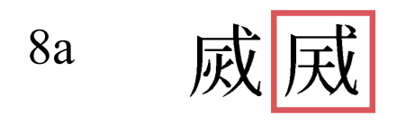
例二：「(q3932)」表示该 IDS 适用于 UCV #393 的第二个字形（为一位数）。
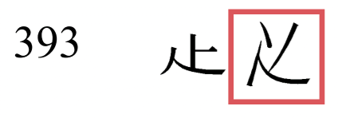
例三：「(q454a17)」表示该 IDS 适用于 UCV #454a 的第十七个字形（如下图）。
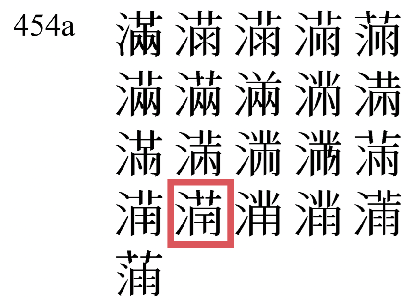
当一个字通过类推/反推某个 UCV 的部件而创造出新的变体，则该 IDS 组合的「字形变体标识符」就以 qq开头，后面接上一个或多个 UCV 的三位数序号（若序号的数字不足，用 0 补足）。
例一：「(qq222)」表示该 IDS 描述 (.) 有一个部件（八d）变成了 UCV #222 中的一个变体（儿.）。见下两图。
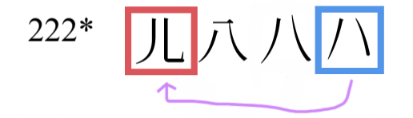
例二：「(qq053194)」表示该 IDS 描述 月）变成了 UCV #53 中的一个变体（⺼），还有一个部件（夂）变成了 UCV #194 中的一个变体（攵）。见下两图。
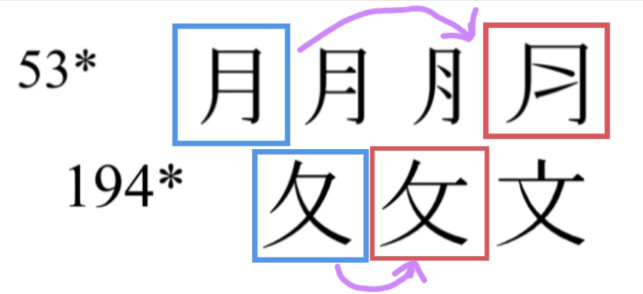
EBNF 语法定义：
Alternate_Variants ::= [0-9a-z.]+
如果一个字存在笔画级别差异或部分部件的位置差异的变体，则该 IDS 组合的「字形变体标识符」就会以小写字母、点 . 及数字标示。
笔画样式及位置差异的示例：
|
丰 ⿻丿三(..p)
↓
(..p)
然后
邦 ⿰丰..p阝(.)
↓
邦 ⿰阝
|
勳 ⿺熏力(r)
↓
(r)
|
|
刍 ⿱⺈⺕(x)
↓
(x)
|
务 ⿱攵力(y)
↓
(y)
|
常见的笔画式「字形变体标识符」字符及其含义如下：
.：占位符、默认字形a：未知b：未知c：未知d：点g：钩h：横n：捺p：撇s：竖t：提w：弯x：更多交叉（x 为 cross 的缩写）y：更少交叉z：折常见的位置「字形变体标识符」字符及其含义如下：
u：上（up）l：左（left）r：右（right）
「字形变体标识符」的完整组合是对该字的全部部件，每个部件的笔画样式字符或使用的「字形变体标识符」，按部件顺序串联，例：上文中的「
此类「字形变体标识符」一般用于表示某个汉字应该用的是部件的原字形，但是由于某些因素（避让）需要更换成不同的字形。例如：「子」有两个 IDS「字形变体标识符」：
EBNF 语法定义与 §4.3.3 〈笔画样式及位置差异的变体〉 一样，「字形变体标识符」使用小写字母、点 . 及数字标示。部分常见变体如下：
(m)」表示镜像汉字或带有镜像部件的变体，例：「(e)」表示该 IDS 组合出的字与原字相似（？）但不在 UCV 规则内，例：「j」「q」或数字开头表示其他种类的笔画差异，例：「
实际上，§4.3.2 〈UCV 规则下的变体〉、§4.3.3 〈笔画样式及位置差异的变体〉、§4.3.4 〈其他变体〉都是「字形变体标识符」的自定义子类，使用小写字母、数字和点 . 组合而成。它们之间并没有严格的界限，某些变体可能同时属于多个上述子类。只要「字形变体标识符」的语法符合上述 EBNF 定义，并且能够清晰地区分某个汉字内不同字形变体的不同 IDS 组合，就是合法的「字形变体标识符」。
有些字中有一些结构难以用一般 IDS 描述，或只能以自循环表述，如「乙」「亞」「凸」「一」……为了仍可描述这些汉字的写法而不陷入自循环，就有了「笔画链」（EBNF 语法内的 Stroke_Chain）。
EBNF 语法定义：
IDS_Sequence ::= Stroke_Chain | ...
Stroke_Chain ::= "#" "(" Stroke_Part+ "z"? ")"
「笔画链」以 #( 开头，以 ) 结尾，中间部分包含笔画字符、控制字符和笔画修饰字符。笔画字符和笔画修饰字符也可用字母代替以避免自循环和方便输入。笔画字符又可分为独立笔画字符和复合笔画字符。「笔画链」里的笔画字符按顺序首尾相连，连贯地书写下去，所以称之为「链」。所有笔画忽略书写时的角度，只关注笔画的起点、终点和粗细变化。「笔画链」作为一个独体，当与其他部件穿插重叠时，仍然保持「笔画链」的笔画顺序和连接关系不变。
EBNF 语法定义：
Stroke_Part ::= StReversed_Indicator? (Ideograph_Char | Stroke_Letter) (StCrossing_Indicator | StBreak_Indicator)?
Stroke_Letter ::= [HSPN] [g]? | [SP] "Hw" [g]? | [DTJZ] | "Wg" | [Q][abcd]
StReversed_Indicator ::= "-"
StCrossing_Indicator ::= "x" Number
StBreak_Indicator ::= "b"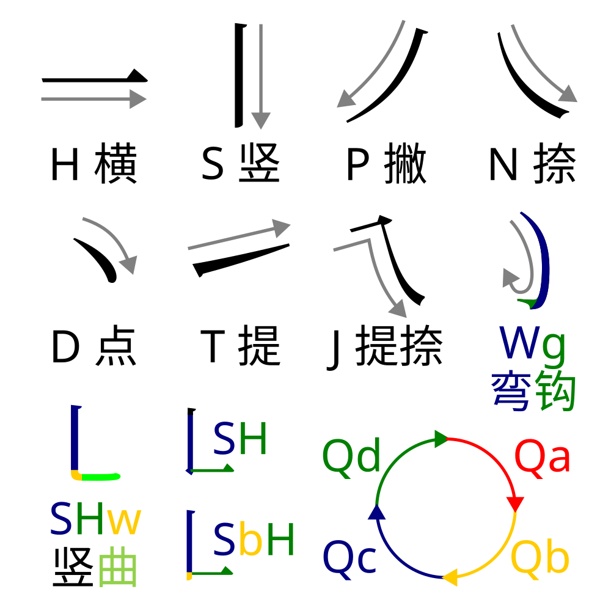
独立笔画字母包括：
笔画修饰字符包括：
w：只能在 SH 或 PH 之后使用，表示横的起始连接处更圆润，如：W」混淆。g：表示这个笔画的末尾带钩，如：H、S、P、N、W 之后使用；其也可与「w」连用，此时置于「w」之后，如：b：用于单个笔画字符之后，表示笔画强制中断，标准化时不可连接下一笔变成另一个笔画；但是下一笔起始点仍在当前笔画的末端位置。如凵y：控制字符包括：
-：用于单个笔画字符之前，表示这个笔画字符的组合方向方向要倒着写（指起点和终点反转），如：z：用于单个笔画链的末尾，表示这个笔画链首尾相连，如：x：用于单个笔画字符之后，在此控制字符之后要加上一个正整数 n，表示这个笔画字符与其所在笔画链中的第 n 个笔画字符交叉（笔画字符的序号是从 0 开始数，而不是从 1 开始）。取 IDS 条目| 笔画链 | #( | -𠃌 | 𠃊x0 | ) |
|---|---|---|---|---|
| 顺序 | 0 | 1 |
x 例子：
下表提供复合笔画字符和部分汉字的「笔画链」：
| 复合笔画字符 | ⺄ | ㇁ | ㇂ | ㇄ | ㇅ | ㇇ | ㇈ |
|---|---|---|---|---|---|---|---|
| 笔画链 | #(HNg) | #(Wg) | #(Ng) | #(SHw) | #(HSH) | #(HP) | #(HSHwg) |
| 复合笔画字符 | ㇉ | ㇊ | ㇋ | ㇌ | ㇍ | ㇎ | 乁 |
| 笔画链 | #(SHSg) | #(HST) | #(HSHP) | #(HPWg) | #(HSHw) | #(HSHS) | #(HN) |
| 复合笔画字符 | ㇝ | ㇢ | 乙 | 乚 | 乛 | 亅 | 𠃊 |
| 笔画链 | #(J) | #(Pg) | #(HPHwg) | #(SHwg) | #(Hg) | #(Sg) | #(SH) |
| 复合笔画字符 | 𠃋 | 𠃌 | 𠃍 | 𠃑 | 𠄌 | 𠄎 | 〇 |
| 笔画链 | #(PH) | #(HSg) | #(HS) | #(SHS) | #(ST) | #(HSHSg) | #(◟◜◝◞z) |
| 汉字 | 𠂆 | 匚 | 𠤬 | | 弓 | 己 | 巳 |
| 笔画链 | #(丿丿) | #(-一𠃊) | #(-𠃊㇈) | #(-𠃊㇎z) | #(𠃍-一㇉) | #(𠃍-一乚) | #(一-𠃍乚) |
笔画链的示例：
重叠 IDC （
在白式 IDS 语法中，重叠 IDC （
白式 IDS 语法中，重叠 IDC 添加了扩展语法「穿过表达式」以对重叠 IDC 提供更多资讯。扩展语法为在重叠 IDC 后面添加方括号[ ]，里面添加描述字符，即变成
EBNF 语法定义：
IDS_Sequence ::= ... | IDS_BinaryOverlapOperator Overlap_Modifier IDS_Component IDS_Component | ...
Overlap_Modifier ::= "[" Overlap_Matrix ("|" Overlap_Matrix)? "]"
IDS_BinaryOverlapOperator ::= "⿻"EBNF 语法定义：
Overlap_Matrix ::= Overlap_Horizontal_Indexing | ...
Overlap_Horizontal_Indexing ::= (Number | Negative_Number)? ":" (Number | Negative_Number)?垂直结构穿过水平结构的限制语法，在「穿过表达式」里为：前面一个正整数，后面一个（一般是负）整数，中间用冒号分隔。两个整数中可省略其中一者，但不能都省略。
最常见的限制语法是：a、b 为正整数）表示 a 个水平结构正下面接触（如「丅」形）；b 个水平结构正上面接触（如「丄」形）。
如果 b 前面带有负号（如y 个水平结构接触而非正数；如果 a 前面带有负号（如
冒号 : 前面的数字应当取尽量取正数 a，除非倒数时 -x 的 x 比正数时的 a 小（如数值 -1）；冒号 : 后面的数字应当尽量取负数 -y，除非正数时的值 b 比 y 小（如数值 1）。
若省略冒号 : 前面的数字（如 b）；若省略冒号 : 后面的数字（如 a）。
若垂直结构的顶端和底端都在水平结构的范围之外（即上下都凸出），则直接省略方括号的限制语法：
下面以最经典的重叠 IDS「
| 汉字 | 正式重叠 IDS 限制语法 | 等价但错误的写法 |
|---|---|---|
| 甴 |
⿻[:-2]丨日
|
⿻[:2]丨日
|
| 由 |
⿻[:-1]丨日
|
⿻[:3]丨日
|
| 申 |
⿻丨日
|
⿻[:]丨日
⿻[0:-0]丨日
|
| 甲 |
⿻[1:]丨日
|
⿻[-3:]丨日
|
| 曱 |
⿻[2:]丨日
|
⿻[-2:]丨日
|
| 田 |
⿴囗十 （你以为会很复杂？）
|
⿻[1:-1]丨日
⿻[1:3]丨日
⿻[-3:-1]丨日
⿻[-3:3]丨日
|
§6.2.3〈省略情况〉里，「省略」的情况其实是代表第 0 横（即第一个横再上面的一个「虚拟」横）或第 -0 横（即最后一个横再下面的一个「虚拟」横）。可参考下图「申」计算
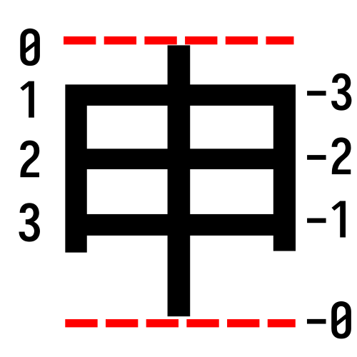
EBNF 语法定义：
Overlap_Matrix ::= ... | Overlap_Rows | Overlap_Cell+
Overlap_Rows ::= Overlap_Row? ("," Overlap_Row?)+
Overlap_Row ::= Overlap_Cell*
Overlap_Cell ::= Overlap_Identity | Overlap_Crossing | Overlap_Non_Crossing
Overlap_Identity ::= "." | "_"
Overlap_Crossing ::= [xabcd]
Overlap_Non_Crossing ::= [lr]汉字最基础笔画结构是「横」和「竖」。笔画穿插（大多数情况下）是由「横」和「竖」之间的穿插关系引起的，因此重叠标记的设计主要考量「横」和「竖」之间的关系，而纵横交叉最自然的方式就是矩阵结构。重叠完整版的矩阵字串表示重叠 IDC 中「横」和「竖」之间的穿插关系，甚至可以表示更复杂的穿插关系（如「丅」「丄」「⺊」「┤」形）。
以下步骤描述如何分析重叠 IDC 中的矩阵穿插关系：
n 竖m 横m 横行 × n 竖列大小的穿过矩阵。横i in 1..m（竖j in 1..n（竖j 与横i 交叉（十形）：
竖j 有多个垂直段？有的话，从上到下依序每段打 横i竖j 元素为交叉对应垂直段的字母竖j 没有多个垂直段，矩阵的横i竖j 元素元素为 竖j 顶在横i 上（丅形或丄形，可以不触碰），则矩阵横i竖j 元素为 横i 顶在竖j 上（⺊形或┤形，可以不触碰），则矩阵横i竖j 元素为 横i 和竖j 后，得到一个完整填充的穿过矩阵表示。横i）均为 横i 在所有竖的左边（-|||…| 形），则矩阵的横i行全部替换为一个 横i 在所有竖的右边（|…|||- 形），则矩阵的横i行全部替换为一个 m 行到第 n 行之间（不含头尾）均为 m:n（m、n 为负数时表示到最后虚拟 -0 行的距离）。m、n 为 0 时应省略注2, 连接，形成「矩阵字串」。[ ] 包裹，形成最终的「穿过表达式」。竖j 有多个垂直段？有的话，从上到下依序每段打 m:n 代表第 m 行到第 n - 1 行之间均为 n）均为 m 行（到第 n - 1 行）的元素是 x，第 n 行的元素是 .。
[., ., ., x, x, x] 中从第 3 行到第 5 行均为 [3:]（最后一行出头）或错误的 [3:6]/[3:-0]（6/-0 表示该行不是 x，但是第 6 行并不存在而错误） 。
| 汉字 | 切片语法 | 穿过矩阵 |
|---|---|---|
| 甴 |
⿻[:-2]丨日
|
⿻[x, ., .]丨日
|
| 由 |
⿻[:-1]丨日
|
⿻[x, x, .]丨日
|
| 申 |
⿻[0:-0]丨日
|
⿻[x, x, x]丨日
|
| 甲 |
⿻[1:]丨日
|
⿻[., x, x]丨日
|
| 曱 |
⿻[2:]丨日
|
⿻[., ., x]丨日
|
| 田 |
⿻[1:-1]丨日
|
⿻[., x, .]丨日
|
例：「「
n = 2m = 3[(?,?), (?,?), (?,?)]横₁:
竖₁:
竖₁ 与横₁ 交叉（十形），则矩阵的横₁竖₁元素为：竖₁ 没有多个部分）竖₂:
// 此时矩阵 = 竖₂ 与横₁ 交叉（十形），则矩阵的横₁竖₂元素为：竖₂ 没有多个部分）[(x,x), (?,?), (?,?)]
横₂:
竖₁:
竖₁ 与横₂ 交叉（十形），则矩阵的横₂竖₁元素为：竖₁ 没有多个部分）竖₂:
// 此时矩阵 = 竖₂ 与横₂ 交叉（十形），则矩阵的横₂竖₂元素为：竖₂ 没有多个部分）[(x,x), (x,x), (?,?)]
横₃:
竖₁:
竖₁ 与横₂ 交叉（十形）：（条件不符合）竖₁ 顶在横₃ 上（丅形或丄形），则矩阵的横₃竖₁元素为：竖₂:
竖₂ 与横₂ 交叉（十形）：（条件不符合）竖₂ 顶在横₃ 上（丅形或丄形），则矩阵的横₃竖₂元素为：横i 和竖j 后，完整的穿过矩阵表示 = [(x,x), (x,x), (.,.)]
然后再为整体矩阵进行简化：
// 此时矩阵 = ["", "", (.,.)]
// 此时矩阵 = ["", "", "."]
m行到第n行之间（不含头尾）均为m:n（m、n为负数时表示到最后一行的距离）。m、n为0时应省略
// 此时矩阵表达式 = , 连接。
// 如果没有变成
以下给出其他例子供参考：
b 段（即撇）c 段（即撇）b 段（即下面的竖）；向部件的第二笔「.）通过、然后穿过竖钩（x）.）、然后下面的提从左边触碰（┤形）第二竖（_）EBNF 语法定义：
Overlap_Modifier ::= "[" Overlap_Matrix ("|" Overlap_Matrix)? "]"以上描述只能表示一个纵向部件和一个横向部件之间的穿插关系，但有些汉字的结构比较复杂，纵向部件里面也有水平笔画 与 横向部件里面的竖直笔画 交叉，因此也需要将反向的纵横穿插关系表示出来。§6.1〈重叠标记的简介及基础概念〉中提到：
对于需要反向矩阵结构的重叠 IDC，则将以上定义的纵向部件和横向部件的概念反过来使用，即：⿻字₁字₂ 中，字₁ 是纵向部件，字₂ 是横向部件。
⿻字₁字₂ 中，字₁ 是横向部件，字₂ 是纵向部件。
首先完成一遍§6.3〈重叠完整版：任意穿插的矩阵结构〉得到「穿过表达式」矩阵字串 "fr,on,t"，然后将"ba,ck"。最后将两个字串使用竖线 | 合并，得到最终的重叠完整版的「穿过表达式」 [fr,on,t|ba,ck]，其中竖线 | 分隔了正向矩阵结构和反向矩阵结构。
例：「𫠣」（U+2B823）的 lv0 IDS 条目简化两轮如下：
a 和 bb 段应该和以下给出另一个虚拟例子供参考：
最后看重叠的一个特例「𢀓」（U+22013）：
𢀓 ⿻[r,r,l,l]工.#(◝◞-◜-◟)
其中[ ] 里面表示的不是矩阵穿过关系，而是单纯这个线段每个 Q 部分是在纵向部件的左边 l 还是右边 r。目前已知的特例只有这一个汉字。
EBNF 语法定义：
IDS_Sequence ::= ... | IDS_BinaryAmbiguousOperator Index_Modifier IDS_Component IDS_Component | ...
Index_Modifier ::= "[" Number "]"
IDS_BinaryAmbiguousOperator ::= [⿴⿵⿶⿷] | ...除了重叠 IDC 会有歧义，全包围及半包围 IDC 也会产生类似的歧义。
| 包围方式 | IDC 字符 | Unicode |
|---|---|---|
| 全包围 | ⿴ | U+2FF4 |
| 半包围 | ⿵ | U+2FF5 |
| ⿶ | U+2FF6 | |
| ⿷ | U+2FF7 | |
| | U+2FFC |
产生的什么歧义呢？以一个虚拟的 IDS 举例：「[ ]，里面填写数字使之成为 x 是一个正整数，表示x + 1 个全封闭空间内（从上到下、先中间，然后左到右数）。如果 x 为 0（表示放在第一个全封闭空间）时，整个扩展语法 [0] 可以省略不写。
全包围计数例子：
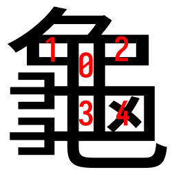
全包围例子：
[1] IDS则将「
对于半包围 IDS 同理，只是查看的是符合半包围 IDC 包围方式的半封闭空间数量。比如「[0]（默认省略）、[1] 和 [2]。
半包围例子：
EBNF 语法定义：
IDS_Sequence ::= ... | IDS_BinaryAmbiguousOperator Index_Modifier IDS_Component IDS_Component | ...
IDS_BinaryAmbiguousOperator ::= ... | []
最后加上一个可在字统网快速使用的消歧义：当使用减法「」这个二元 IDS 符号时（如[ ] 来指定要去掉的[ ] 里面的数字为 0，则表示去掉第一个[0] 可以省略不写。
例子（可用字统网查询）：
| IDS | 汉字 | 说明 |
|---|---|---|
| 土 | 「王」去掉第0个「一」，即上面的「一」 | |
| 工 | 「王」去掉第1个「一」，即中间的「一」 | |
| 干 | 「王」去掉第2个「一」，即下面的「一」 | |
| 吅 | 「品」去掉第0个「口」，即上面的「口」 | |
| 吕 | 「品」去掉第1个「口」，即下左的「口」 |
注意事项：
EBNF 语法定义：
IDS_Locale_Sequence ::= Unique_Sequence_Separator? IDS_Sequence ...
Unique_Sequence_Separator ::= "{" ("?" One_Digit_Number?)? Ideograph_Char_with_Variant Unicode_Sources? "}"
虽然以上定义了诸多延展格式，但是仍会有部分形似汉字无法仅透过 IDS 区分。这种情况下，为了保证每个 IDS 组合都可以反向唯一地映射到一个汉字，在 IDS 组合前面插入带有「抽象构型」的「唯一化分隔符」（EBNF 里面的 Unique_Sequence_Separator）来实现。
「唯一化分隔符」的语法为：{，汉字，}，如：{字}，其中的汉字必须是符合这个 IDS 组合汉字的「抽象构型」。以下是判断「唯一化分隔符」的使用原则：
{?，数字?，汉字，}，如：{?字}、{?0字}；{，汉字，大写字母，}，如：{字T} 代表 T 源。例子：
「抽象构型」(abstract shape) 指的是汉字可以拥有不同的变体部件，但仍可辨识和区分汉字的意义。详细可参考 https://zhuanlan.zhihu.com/p/480635382。例如：「
在 ids_lv1（即字统网使用的）中，所有的笔画级别差异（即相同位置的相似笔画，如在同一位置上的「.」和「T」只是将「.」和「T」都只造成了笔画级别差异。所以这两个 IDS 会在 ids_lv1 中被合并为「
合并的过程主要是通过移除附着在汉字部件后面、没有括号、修饰笔画样式的「字形变体标识符」（见 §4.3.3〈笔画样式及位置差异的变体〉）。合并的笔画类「字形变体标识符」有以下几种：
t）的避让字形，如d）的避让字形，如t）的避让字形，如p）的避让字形，如
如果地区「字形变体标识符」的字形差异也是在笔画层级的区别，且在 UCV 列表中定义，也可以按此规则合并删除「字形变体标识符」（例如：H」将「H」，
在 ids_lv2 中，IDS 组合内的汉字部件将尽量替换成靠近 G 源常用字的形态；UCV 列表中被认为「必须统一」的部件也会被合并。例如：lv1 的. 和 J。
接下来请尝试理解「龜」(U+9F9C) 的白式 IDS 条目（lv0），并依据 IDS 绘出最终字形。【注：在编撰时的 IDS 数据库里面，
龜 ⿱丿⿻#(-丨一-𠃍丨b一b乚)⿰⿱⺕⺕コ乂d(.);⿱⺈⿹⿴⿻[1:]⿺乚.#(丨b一-𠃍)#(一-𠃍丨b一)乂d⿱⺕⺕(H);⿱⺈⿴[4]⿻[.,.__,r,,bxx]⿹⿺乚.丨⿱ココ⿱#(一-𠃍丨b一)コ乂d(J);⿱⺈⿻[1:]⿺乚.丨⿱#(一-𠃍丨b一)⿰⿱⺕⺕コ乂d(K);⿱⺈⿴[4]⿻[.,.__,r,,bx.]⿹⿺乚.丨⿱ココ⿱#(一-𠃍丨b一)コ乂d(T);⿱⺈⿻#(-丨一-𠃍丨b一b乚)⿰⿱⺕⺕コ乂d(V);⿱⺈⿻[1:]乚.⿱口.⿰⿱⺕⺕目(q4072)
将 IDS 依据「字形变体标识符」拆分得到 IDS 表：
| 变体标识符 ID | IDS 条目 | 参考示例字形 |
|---|---|---|
| (.) | 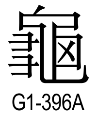 |
|
| (H) | 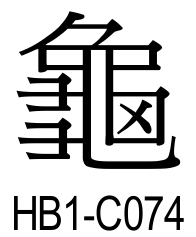 |
|
| (J) | ||
| (K) | 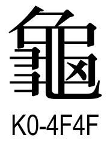 |
|
| (T) | 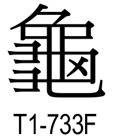 |
|
| (V) | 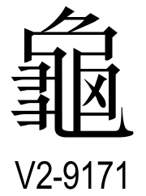 |
|
| (q4072) |
| ID | 组装 |
|---|---|
| (.) | |
| (H) | |
| (J) | 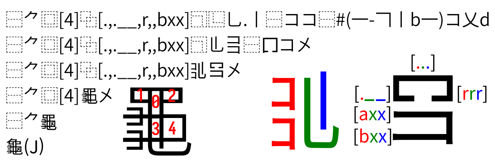 |
| (K) | |
| (T) | 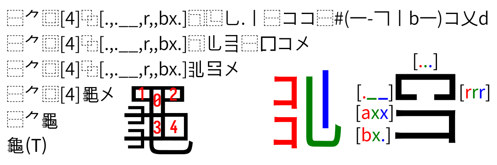 |
| (V) | |
| (q4072) |
下面是白式 IDS 语法的 EBNF（扩展巴科斯-瑙尔范式）定义。以下定义由 @NightFurySL2001 整理且仅供参考，并非正式定义。以下使用 W3C XML 的 EBNF 语法表述。
/* zi.tools IDS Database EBNF syntax */
IDS_Definition_Row ::= Ideograph_Char TAB IDS_Locale_Definition (TAB IDS_Alternative_Definition)
/* 单个部件描述 */
IDS_Locale_Definition ::= IDS_Sequence | IDS_Locale_Sequence (";" IDS_Locale_Sequence)*
IDS_Alternative_Definition ::= (IDS_Sequence | IDS_Locale_Sequence) (";" (IDS_Sequence | IDS_Locale_Sequence))*
IDS_Locale_Sequence ::= Unique_Sequence_Separator? IDS_Sequence Variant_Identifier_Definition?
IDS_Sequence ::= Stroke_Chain
| IDS_UnaryOperator IDS_Component
| IDS_BinaryOperator IDS_Component IDS_Component
| IDS_BinaryOverlapOperator Overlap_Modifier IDS_Component IDS_Component
| IDS_BinaryAmbiguousOperator Index_Modifier IDS_Component IDS_Component
| IDS_TrinaryOperator IDS_Component IDS_Component IDS_Component
IDS_Component ::= IDS_Sequence | Stroke_Chain | Ideo_with_Variant_ID | Curves | [リ〢〣コ]
/* 4. 汉字的字形变体 */
Ideo_with_Variant_ID ::= Ideograph_Char_with_Variant Variant_Identifier?
Variant_Identifier_Definition ::= "(" Variant_Identifier ("," Variant_Identifier)* ")"
Variant_Identifier ::= Wildcard_Source | Unicode_Sources | UCV_Full_Position | Imaginary_UCV | Alternate_Variants
Wildcard_Source ::= "."
Unicode_Sources ::= [BGHJKMPSTUVQ]
UCV_Full_Position ::= [qpxy] UCV_ID_Number UCV_Position_Number
UCV_ID_Number ::= Three_Digit_Number [a-z]?
UCV_Position_Number ::= (Positive_Numeral | Two_Digit_Number) [xy]?
Imaginary_UCV ::= "qq" UCV_ID_Number+
Alternate_Variants ::= [0-9a-z.]+
/* 5. 笔画之间的相接 */
Stroke_Chain ::= "#" "(" Stroke_Part+ "z"? ")"
Stroke_Part ::= StReversed_Indicator? (Ideograph_Char | Stroke_Letter) (StCrossing_Indicator | StBreak_Indicator)?
Stroke_Letter ::= [HSPN] [g]? | [SP] "Hw" [g]? | [DTJZ] | "Wg" | [Q][abcd]
StReversed_Indicator ::= "-"
StCrossing_Indicator ::= "x" Number
StBreak_Indicator ::= "b"
/* 6. 部件之间的重叠穿插 */
Overlap_Modifier ::= "[" Overlap_Matrix ("|" Overlap_Matrix)? "]"
Overlap_Matrix ::= Overlap_Horizontal_Indexing | Overlap_Rows | Overlap_Cell+
Overlap_Horizontal_Indexing ::= (Number | Negative_Number)? ":" (Number | Negative_Number)?
Overlap_Rows ::= Overlap_Row? ("," Overlap_Row?)+
Overlap_Row ::= Overlap_Cell*
Overlap_Cell ::= Overlap_Identity | Overlap_Crossing | Overlap_Non_Crossing
Overlap_Identity ::= "." | "_"
Overlap_Crossing ::= [xabcd]
Overlap_Non_Crossing ::= [lr]
Index_Modifier ::= "[" Number "]"
/* 7. 统一化 */
Unique_Sequence_Separator ::= "{" ("?" One_Digit_Number?)? Ideograph_Char_with_Variant Unicode_Sources? "}"
/* 字符定义 */
Ideograph_Char ::= Ideograph_Char_with_Variant | Curves | [リ〢〣コ]
Ideograph_Char_with_Variant ::= Hanzi | CJK_Stroke | [ユス]
Hanzi ::= \p{Ideographic=Y} | \p{Radical=Y} |
Curves ::= [◝◞◟◜]
CJK_Stroke ::= [#x31C0-#x31E3] // U+30E4 和 U+30E5 未收录进 zi.tools 笔画库
TAB ::= #x0009
IDS_UnaryOperator ::= []
IDS_BinaryOperator ::= IDS_BinaryUnique | IDS_BinaryOverlap | IDS_BinaryAmbiguousWrapping
IDS_BinaryUniqueOperator ::= [⿰⿱⿸⿹⿺]
IDS_BinaryOverlapOperator ::= "⿻"
IDS_BinaryAmbiguousOperator ::= [⿴⿵⿶⿷]
IDS_TrinaryOperator ::= [⿲⿳]
Positive_Numeral ::= [1-9]
One_Digit_Number ::= "0" | Positive_Numeral
Two_Digit_Number ::= One_Digit_Number One_Digit_Number
Three_Digit_Number ::= One_Digit_Number One_Digit_Number One_Digit_Number
Number ::= "0" | Positive_Numeral One_Digit_Number*
Negative_Number ::= "-" Positive_Numeral One_Digit_Number*
上面的 EBNF 定义也被转换成使用 Python regex 模块的正则表达式实现。你可以对「白式 IDS 数据库」内的 .txt 文件运行该 Python 脚本文件 以验证该 EBNF 定义是否对应「白式 IDS 数据库」的条目。
以上就是白式 IDS 扩展语法的基本内容，部分内容为反向推导。如果你对上述描述有任何疑问或者建议，欢迎在GitHub 仓库讨论。
IDS 扩展设计：字统网 (zi.tools) 站长白易，IDS数据库的创建者和维护者，整理时提供关键理论指导
白式 IDS 数据库：https://github.com/yi-bai/ids（编撰时的版本是 v17.0.65260201）
整合/校对/开源：NightFurySL2001（夜煞之乐）
HTML原作：-PT_AxH_RV-（幻溯验劣//溯 潋 - Phatravix
Rethyvola/Ocedaep Ginanob）
DOCX/PPTX原作：Losketch
本文以 MIT 协议授权发布。